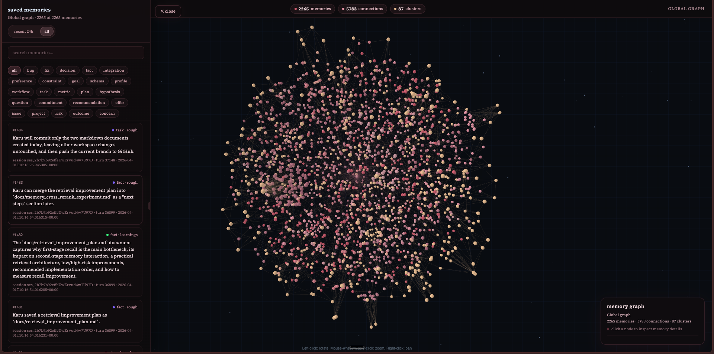

session
01
Capture
Useful context appears while you code.
Titan turns past sessions into local memory, so your agent can recall decisions, preferences, and project context when it needs them.
Titan watches the work, extracts durable memories, and keeps them ready for future sessions.
Useful context appears while you code.
Titan saves the important parts on your machine.
Your agent gets the right memory when it asks.
The graph is not a decoration. It is how memories, sessions, and decisions become inspectable.

Titan runs locally beside your agent. Start it, verify it, and keep working.
pipx install 'git+https://github.com/kuwosaad/Titan-Mem.git' titan init titan doctor --agent opencode
Titan gives your coding agent the context it forgot.